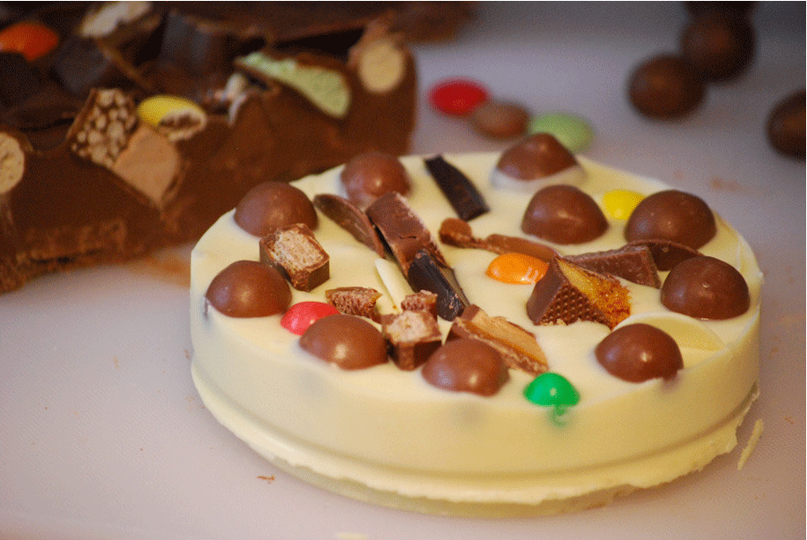

Chocolate Pizza
POSTED ON 15 DEC 2013 / DESSERTS

For the fig-swirl: Melt butter over meduim heat in a saucepan. Add brown sugar and stir to dissolve. Halve all of the figs and toss in the saucepan with water and lemon juice. Cook over medium heat, stirring frequently, until you have a chunky-jammy mixture. Add salt with one or two stirs, set aside and let cool completely.
Ice cream: In a small pot over medium heat, combine milk, and granulated sugar until sugar is completely dissolved and the milk is just barely lukewarm. Whisk in the egg yolks. Set mixture in the fridge and wait until the fig mixture is cooled.
Using an ice cream machine, pour liquids into the frozen basin and process according to manufacturer instructions, i.e., let spin and thicken for 20 minutes before adding mascarpone, fig jam mixture, and the nuts. Continue to process for +/-10 minutes. Pour semi-frozen mixture into a pyrex dish or glass tupperware. Freeze for at least two hours before serving.


Vanessa Stevenson
Food enthusiast, photography fan. Add a pinch of raw foodism and that's pretty much who I am.